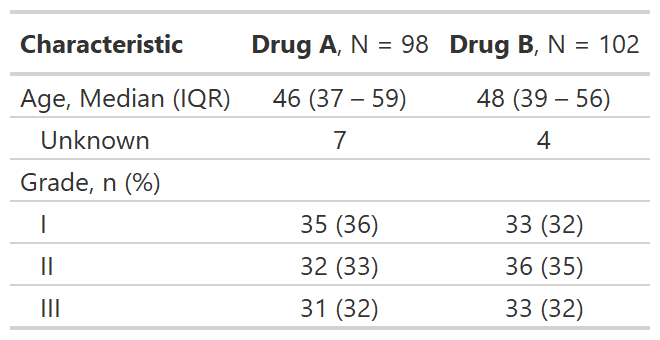

Use this function to set preferences for the display of gtsummary tables.
The default formatting and styling throughout the gtsummary package are
taken from the published reporting guidelines of the top four urology
journals: European Urology, The Journal of Urology, Urology and
the British Journal of Urology International. Use this function to change
the default reporting style to match another journal, or your own
personal style.
Use this function to set preferences for the display of gtsummary tables.
The default formatting and styling throughout the gtsummary package are
taken from the published reporting guidelines of the top four urology
journals: European Urology, The Journal of Urology, Urology and
the British Journal of Urology International. Use this function to change
the default reporting style to match another journal, or your own
personal style.
set_gtsummary_theme(x) reset_gtsummary_theme() theme_gtsummary_journal(journal = "jama") theme_gtsummary_compact() theme_gtsummary_printer( print_engine = c("gt", "kable", "kable_extra", "flextable", "huxtable", "tibble") )
Arguments
| x | A gtsummary theme function, e.g. |
|---|---|
| journal | String indicating the journal theme to follow.
|
| print_engine | String indicating the print engine. Default is |
Themes
theme_gtsummary_journal(journal=)journal = "jama"sets theme to align with the JAMA reporting guidelines
large p-values are rounded to two decimal places
in
tbl_summary()the IQR is separated with a dash, rather than commain
tbl_summary()the percent symbol is not printed next to percentages
theme_gtsummary_compact()tables printed with gt, flextable, and huxtable will be compact with smaller font size and reduced cell padding
theme_gtsummary_printer(print_engine=)print_engine = "gt"sets the gt package as the default print engineprint_engine = "kable"sets theknitr::kable()function as the default print engineprint_engine = "flextable"sets the flextable package as the default print engineprint_engine = "kable_extra"sets the kableExtra package as the default print engineprint_engine = "huxtable"sets the huxtable package as the default print engine Usereset_gtsummary_theme()to restore the default settings
Review the themes vignette to create your own themes.
Example Output
Example

Examples
# Setting JAMA theme for gtsummary set_gtsummary_theme(theme_gtsummary_journal("jama"))#># Themes can be combined by including more than one set_gtsummary_theme(theme_gtsummary_compact())#>set_gtsummary_theme_ex1 <- trial %>% dplyr::select(age, grade, trt) %>% tbl_summary(by = trt) %>% add_stat_label() %>% as_gt() # reset gtsummary theme reset_gtsummary_theme()